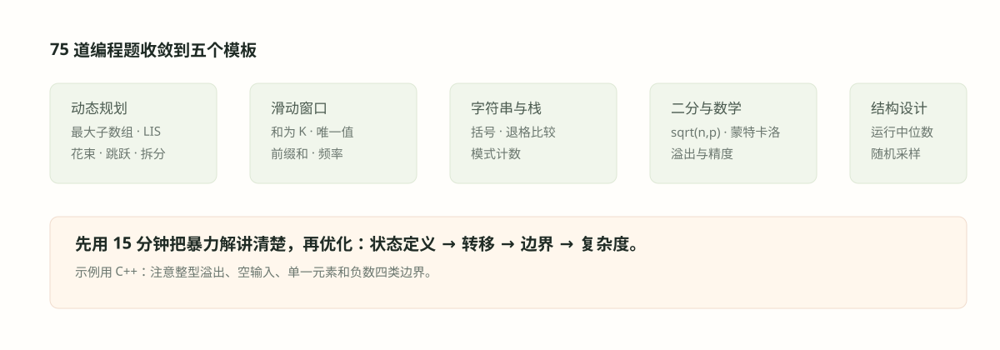

#034. 编程四：字符串与栈

#学习目标：把「比较与扫描」写成不变量
前面三章已经把动态规划、滑动窗口与前缀和的工具链打通：031 章解决了最大子数组一族，033 章解决了窗口与前缀和计数一族。本章处理的是另一类看似零散、实则同源的题：字符串怎么比较、子集怎么枚举、子数组怎么一次扫过。它们的共同答案是：先写出循环不变量，再写代码。双指针能写对，靠的是「失配前两串前缀逐位相等」这条不变量；扫描题能一次过，靠的是「断点处重置计数」这条不变量；哈希计数能不重不漏，靠的是「值到次数的映射在窗口滑动时保持真实」这条不变量。
为什么量化面试偏爱这类题？因为它们短——十五分钟能写完——但每一行都在暴露习惯：是否先澄清题意（大小写折叠的口径、子数组与子序列的区分、严格与非严格），是否主动给出复杂度，是否检查空串、单元素、负数与溢出。面试官在意的不是你见过这道题，而是你能不能把一个模糊的比较需求翻译成一条可执行的不变量。
两串（或两端）指针每前进一步，都维护「已扫过部分满足题目要求」；失配时只有有限的修正机会（本章是跳过一个字符）。
幂集这类 \(2^n\) 规模的枚举，既可以用位掩码整体编号，也可以用回溯逐层展开「选/不选」二叉决策树，二者复杂度同阶、代码取向不同。
等差延展、严格递增段、支配窗口这类子数组题，都是单指针扫描加「断点重置」；关键在断点处哪些状态要清零、哪些要保留。
#知识点一：字符串双指针与一次失配
大小写无关的比较，第一步永远是「归一化」（normalization）：把两个字符串投影到同一个规范形式再比较。对 ASCII 字母来说，规范形式就是逐字符做小写折叠（case folding），C++ 里是 tolower。这里有一个必须养成的小习惯：tolower 的入参要转成 unsigned char，因为 char 可能为负，直接把负值传给标准库是未定义行为——这类细节正是代码轮的加分点。
长度闸门：若允许至多一次插入或删除，则两串长度差必须满足 \(|n - m| \le 1\)，否则直接返回不相等，省掉一切后续判断。
循环不变量：双指针 \(i, j\) 前进过程中，\(a[0..i-1]\) 与 \(b[0..j-1]\) 在忽略大小写后逐位相等；一旦这条被破坏两次，判定失败。
一次跳过：失配时从较长的串里跳过一个字符（\(i\) 或 \(j\) 加一）。若两串长度相等，只允许增删的「一次编辑」不可能让长度保持相等——等长时除原本就相同外直接判假（见例题 1 的长度闸门分支）；跳过技巧只在长度差恰为 1 时出场。
一次插入/删除编辑的作用是把较长串的某个字符「让位」出去。失配位置之前两串必然对齐（不变量保证），失配位置就是唯一的嫌疑点：把较长串在失配处跳过一个字符后，两串尾部应当完全对齐。若跳过之后很快再次失配，说明至少需要两次编辑，立即返回假。这就是线性时间 \(O(n)\) 判定「编辑距离至多为一（增删型）」的全部原理。
再说本章标题里的「栈」。字符串族题目的另一半是「先生成规范化串、再比较」：退格删除、括号匹配这类题，生成过程需要后进先出的回退，天然用栈实现；而生成之后的比较，就是本章的双指针。所以拿到一道字符串题，先问自己：规范化需不需要回退？需要就用栈先建串，不需要就直接双指针。两个视角往往可以互相印证：栈解法直观但多一遍扫描和 \(O(n)\) 额外空间，双指针解法省空间但需要说清不变量——面试里把两个都讲出来，就是完整的 trade-off 表达。
#知识点二：子数组扫描与哈希计数
第二类工具处理子数组（连续段）。它们的通用形态是：单指针从左到右扫，维护一个随位置更新的局部状态，在「断点」处决定状态的存留。三个代表：等差子数组计数靠「延展长度」，最长严格递增段靠「断裂重置」，累计和非负的最长子列靠「贪心加小根堆」。
等差延展计数：若某段长度为 \(L\) 的连续等差段（相邻差相同），它贡献的长度不小于 3 的等差子数组个数为 \(\frac{(L-1)(L-2)}{2}\)，即以每个右端点新增 \(1, 2, \ldots, L-2\) 个的求和。
非负前缀和的贪心（交换论证）：从左到右累加，总和一旦为负就撤销已选集合中最负的一个元素。撤销只会抬高其后所有前缀和，因此不会破坏已成立的约束；若存在更长的可行子列，其中被撤销的那个最负元素总能与某个更差的选择交换，矛盾。
哈希计数：把「值」或「前缀和」映射到出现次数，配对与计数问题从两层循环降为一次扫描——这正是 033 章前缀和思想的直接延伸。
怎么读这条公式：一个长度为 \(L\) 的等差段里，右端点为第 \(k\) 个元素的合法子数组有 \(k-2\) 个（左端点不能太近），对 \(k\) 从 3 到 \(L\) 求和即得总数。扫描实现里不必真去算 \(L\)，只要维护「以当前元素结尾新增的子数组数」\(r\)，公差延续时 \(r\) 加一、断裂时清零即可。
「最长严格递增的子数组」是一次扫描的简单题，「最长递增子序列」则是 \(O(n\log n)\) 的另一道题（耐心排序/贪心加二分）。源题库里两道都出现过，面试时第一时间向考官确认 contiguous 与否，答错方向的损失远大于写错一行代码。同理，「比较每个元素与其前面的元素」类题面也要先澄清是严格升还是非降。
#例题一：大小写无关比较与编辑一（源题 43）
例题 1（源题 43）：给定两个字符串 \(a\) 与 \(b\)，第一问：忽略大小写判断它们是否相同（如 a 与 A 为真，ca 与 cA 为真，b 与 c 为假）；第二问：若在任一串中增加或删除一个字符后两串忽略大小写相同，也返回真（如 abc 与 AbcX 为真）。
建模。第一问是逐位归一化比较；第二问是「增删型编辑距离至多为一」的判定。两者共用同一个小写折叠函数。
思路。第一问：长度不等直接假，否则逐位比较小写化结果。第二问：先做长度闸门——两串等长时一次增删必然改变长度、不可能保持相等，直接退回第一问的精确比较（如 b 与 c 为假）；长度差恰为 1 时双指针前进，首次失配时从较长串跳过一个字符并记下「已用机会」，第二次失配立即返回假；循环结束后尾部剩余字符总数不超过一即为真。整段算法只扫描每个字符一次。
// 第一问：忽略大小写比较两个字符串是否相同
bool sameIgnoreCase(const string& a, const string& b) {
if (a.size() != b.size()) return false; // 长度不同必不相等
for (size_t i = 0; i < a.size(); ++i)
if (tolower((unsigned char)a[i]) != tolower((unsigned char)b[i]))
return false; // 逐位小写化后比较
return true;
}
// 第二问：忽略大小写后，至多增/删一个字符仍相等
bool sameOrOneEdit(const string& a, const string& b) {
int n = a.size(), m = b.size();
if (abs(n - m) > 1) return false; // 长度差超过 1 直接排除
if (n == m) return sameIgnoreCase(a, b); // 等长：一次增删必改变长度
int i = 0, j = 0;
bool skipped = false; // 是否用过一次跳过机会
while (i < n && j < m) {
if (tolower((unsigned char)a[i]) == tolower((unsigned char)b[j])) {
++i; ++j; // 匹配：双指针同步前进
} else {
if (skipped) return false; // 第二次失配必不相等
skipped = true;
if (n >= m) ++i; else ++j; // 跳过较长串的一个字符
}
}
return (n - i) + (m - j) <= 1; // 尾部至多剩一个字符
}复杂度。时间 \(O(n+m)\)，空间 \(O(1)\)，没有任何额外结构。
边界。空串对空串为真；空串对单字符为真（一次插入）；等长串（如 b 与 c）一次增删后长度必然不等，除原本相同外都为假——这正是等长分支直接退回精确比较的原因。若考官改口径为「恰好编辑一次」，等长直接返回假（原本相同是零次编辑），长度差 1 时要求「恰用一次跳过」或「尾部恰剩一个」二者恰居其一。若再允许「替换一个字符」，算法骨架不变：等长串失配时改为 \(i, j\) 同时前进（再失配即假）。非 ASCII 字节要转 unsigned char 后再折叠，这是 C/C++ 的经典陷阱。
面试怎么讲。先把「归一化 + 长度闸门 + 一次跳过」三步说出口，再补一句不变量：「失配前两串前缀逐位相等，失配点唯一，所以跳较长串一个字符就完成对齐验证」——这句话比代码更能证明你理解算法。
#例题二：幂集的两种枚举（源题 41）
例题 2（源题 41）：给定一个不含重复元素的整数数组，返回其所有子集（幂集），解集中不得包含重复子集，顺序不限。
建模。每个元素面对「选/不选」的二叉决策，\(n\) 个元素共 \(2^n\) 个子集。两种枚举姿势对应两棵同构的树：位掩码把树压成一层循环，回溯显式展开树的路径。
解法一：位掩码。整数 \(\text{mask} \in [0, 2^n)\) 与子集一一对应，第 \(i\) 位为 1 表示选入第 \(i\) 个元素：
// 解法一：位掩码枚举，每个 mask 对应一个子集
vector<vector<int>> subsets(const vector<int>& nums) {
int n = nums.size();
vector<vector<int>> res;
for (int mask = 0; mask < (1 << n); ++mask) { // 枚举全部 2^n 个掩码
vector<int> cur;
for (int i = 0; i < n; ++i)
if (mask >> i & 1) cur.push_back(nums[i]); // 第 i 位为 1 则选入
res.push_back(move(cur));
}
return res;
}解法二：回溯。在第 \(i\) 层决定是否选入 \(\text{nums}[i]\)，走到叶子收集一个子集：
// 解法二：回溯，每层决定「选/不选」当前元素
void dfs(int idx, vector<int>& cur, vector<vector<int>>& res,
const vector<int>& nums) {
if (idx == (int)nums.size()) { res.push_back(cur); return; } // 叶子：收集子集
dfs(idx + 1, cur, res, nums); // 分支一：不选 nums[idx]
cur.push_back(nums[idx]);
dfs(idx + 1, cur, res, nums); // 分支二：选 nums[idx]
cur.pop_back(); // 撤销选择，回溯
}复杂度。两种解法都是时间 \(O(n \cdot 2^n)\)（每个子集要 \(O(n)\) 复制）、输出本身就有这个规模，已是最优；空间不计输出为 \(O(n)\) 递归栈。
边界。空数组返回仅含空集的 \(\{\{\}\}\)；\(n\) 超过 25 左右时 \(2^n\) 已不可枚举，应向考官说明并确认数据范围。若元素可能重复（题面变体），先排序，回溯时同层跳过相同值即可去重——位掩码版没有这么好改，这是回溯版的存在价值。
面试怎么讲。先说「幂集大小 \(2^n\)，所以任何算法都至少这个量级」，把下界交代清楚；再讲两种实现的取舍：掩码版短、适合无重复输入，回溯版可扩展到去重与剪枝（如只枚举大小为 \(k\) 的子集）。
#例题三：子数组与计数一族（源题 50、56、62、55、49、51、54、42）
这一节把题库里六道「一次扫描 + 状态重置/哈希」的题集中解完，另有两道题只做衔接：源题 42（最大子数组和，Kadane 算法）在 031 章已完整推导，此处不重复；源题 51 与 54 与 033 章的哈希计数同族，这里给出实现并说明与该章例题的差异。
例题 3（源题 50）：给定整数数组，返回其中等差子数组（长度不小于 3 的连续子数组，相邻差恒定）的个数。
思路。维护 \(r\)：以当前元素为右端点、公差延续时「新增」的等差子数组个数。右端点每右移一位且公差延续，新增数恰为上一位置新增数加一；公差断裂则清零。答案为所有新增数之和，这正是知识点二里的延展计数公式的增量形式。
int countArithmeticSlices(vector<int>& a) {
int n = a.size(), ans = 0, run = 0; // run：以 i 结尾新增的子数组数
for (int i = 2; i < n; ++i) {
if (a[i] - a[i-1] == a[i-1] - a[i-2]) // 公差延续
ans += ++run;
else
run = 0; // 公差断裂，重新起算
}
return ans; // 长度小于 3 自然返回 0
}数值结果。\([1,2,3,4]\) 得 3（子数组 \([1,2,3]\)、\([2,3,4]\)、\([1,2,3,4]\)）；\([1,3,5,7,9]\) 得 6，与公式 \(\frac{(5-1)(5-2)}{2}=6\) 一致。
复杂度与边界。时间 \(O(n)\)、空间 \(O(1)\)。数组长度小于 3 返回 0；公差可以是 0（如 \([5,5,5]\) 计 1）也可以是负数；若 int 差值可能溢出（元素接近 INT 边界），用 long long 存差。若考官追问「等差子序列」（非连续），那是另一道 \(O(n^2)\) DP 题，用「公差到以该元素结尾的个数」做状态。
面试怎么讲。先在小例子上数一遍「以每个右端点新增几个」，让考官看到增量计数的过程，再给出代码与公式两条互相印证的路径。
例题 4（源题 56）：给定数组，求最长严格递增子数组（连续）的长度。
思路。单指针扫描，\(\text{cur}\) 记录以当前元素结尾的递增段长度：\(\text{cur} = \text{cur}+1\) 若 \(a[i] \gt a[i-1]\)，否则重置为 1。这是「断点重置」的最小样例。
int longestStrictlyIncreasing(vector<int>& a) {
int best = 0, cur = 0;
for (size_t i = 0; i < a.size(); ++i) {
cur = (i > 0 && a[i] > a[i-1]) ? cur + 1 : 1; // 断裂处重置为 1
best = max(best, cur);
}
return best; // 空数组返回 0
}数值结果。\([1,3,5,2,4,6]\) 中 \([1,3,5]\) 与 \([2,4,6]\) 各长 3，答案 3。
复杂度与边界。时间 \(O(n)\)、空间 \(O(1)\)。空数组返回 0，单元素返回 1；「严格」二字去掉后条件改 \(a[i] \ge a[i-1]\)（用 \(\gt\) 判断改 \(>=\)）。面试时主动指出：若考官问的是子序列版本，复杂度跳到 \(O(n\log n)\)，切勿混答。
例题 5（源题 62）：给定数组（如 \([3,-3,5,-2,-2,-2,-2,6,-1]\)），求最长的子列，使其任意前缀和都非负。
建模。子列保持原相对顺序，选中元素的运行和每一步都不得为负——等价于「血量永不为负地尽量多喝药水」的经典模型。目标是最大化选中个数。
思路（贪心 + 小根堆）。从左到右把每个元素都先选入：累加进运行和、压入小根堆。一旦运行和为负，撤销堆中最小的元素（把它从和里减掉、出堆）。撤销一个更早的元素只会抬高其后所有前缀和，不破坏已有约束；交换论证说明若存在更长的可行子列，其中的最差选择总能与被撤销者交换得到不劣解，故贪心得到最大长度。
int longestNonnegPrefix(vector<int>& a) {
priority_queue<int, vector<int>, greater<int>> pq; // 小根堆：缓存已选元素
long long sum = 0; // 已选元素之和（防溢出）
for (int x : a) {
sum += x;
pq.push(x);
if (sum < 0) { sum -= pq.top(); pq.pop(); } // 撤掉最负者，抬高后缀
}
return (int)pq.size();
}数值结果。\([3,-3,5,-2,-2,-2,-2,6,-1]\)：扫描到第三个 \(-2\)（数组第 6 个元素）时运行和为 \(-1\)，撤销最负的 \(-3\)，运行和回到 \(2\)；此后一路不再越界，最终选中 \(\{3,5,-2,-2,-2,-2,6,-1\}\)，按原顺序前缀和为 \(3,8,6,4,2,0,6,5\)，全部非负，长度 8。全取 9 个元素不可行（前缀和在第三个 \(-2\) 处为 \(-1\)），故 8 即最优。
复杂度与边界。均摊时间 \(O(n \log n)\)、空间 \(O(n)\)。全负数组时堆会不断撤销到只剩一个最大元素（其前缀和可能为负则继续撤到空，长度 0——按题意空子列前缀和无违规，返回 0 或 1 需与考官确认口径）。常见错误方向是「从右往左贪心先取大数」，在保持原顺序的版本里不成立，因为约束作用在从左数起的每一步前缀和上。
面试怎么讲。点明这是「前缀约束下的最大选择」模型，先说暴力 \(O(2^n)\)，再引出撤销最差选择的贪心与交换论证，最后补复杂度。
例题 6（源题 55）：数组中出现次数最多的值称为支配值。求最短的子数组，使得同一个值在该子数组内仍以全局频率出现并保持支配。
建模。先澄清口径：设全局众数为 \(M\)、全局频率 \(f\)。「以相同频率出现且仍支配」的子数组必须包含 \(M\) 的全部 \(f\) 次出现，因此最短子数组就是从 \(M\) 的第一次出现到最后一次出现的窗口，答案为 \(\text{last} - \text{first} + 1\)。
int smallestDominatingWindow(vector<int>& a) {
if (a.empty()) return 0; // 空数组特判
unordered_map<int, int> freq;
int modeCnt = 0;
for (int x : a) modeCnt = max(modeCnt, ++freq[x]); // 全局最大出现次数
int M = a[0];
for (int x : a) if (freq[x] == modeCnt) { M = x; break; } // 任取一个众数
int first = -1, last = -1;
for (int i = 0; i < (int)a.size(); ++i) // 记录 M 的首末出现位置
if (a[i] == M) { if (first < 0) first = i; last = i; }
return last - first + 1; // 覆盖全部出现的最短窗口
}数值结果。\([1,1,3,2,4,2,7,8]\)：1 与 2 并列频率 2。取 \(M=1\)，窗口 \([1,1]\) 长 2；取 \(M=2\)，它首次出现在下标 3、最后一次在下标 5，窗口 \([2,4,2]\) 长 3——并列时应对每个候选分别计算再取最小，本例答案 2。上面的实现取「扫到的第一个众数」，本例恰好就是最短者；若要求任意输入下都返回最短，需对每个达到最高频次的值各算一次窗口再取最小。
复杂度与边界。时间 \(O(n)\)、空间 \(O(n)\)。并列众数如上分别计算；若考官改口径为「\(M\) 只需在子数组内仍是众数（频率可小于全局 \(f\)）」，答案退化为 1（单元素子数组 \([M]\)），此时应补充「长度不小于某阈值」等限制才有意义——把口径问清比解题本身更重要。
例题 7（源题 49）：把每个元素与其前面的所有元素比较，返回最大的正差值；若数组在任意位置不满足升序（非降），返回 -1。
思路。题目附加了「整体必须非降」的强前提：一旦存在 \(a[i-1] \gt a[i]\) 立即返回 -1；在非降前提下，任意 \(a[j]-a[i]\)（\(j\) 在后）都不超过 \(a[n-1]-a[0]\)，最大正差就是尾首之差，一次扫描同时完成校验与取值。
long long maxPositiveDiff(const vector<long long>& a) {
if (a.empty()) return -1; // 空输入按题意返回 -1
for (size_t i = 1; i < a.size(); ++i)
if (a[i-1] > a[i]) return -1; // 任一处下降即判负
return a.back() - a.front(); // 非降数组的最大「后-前」差
}数值结果。\([1,2,2,4]\) 得 3；\([1,3,2]\) 因存在下降返回 -1。
复杂度与边界。时间 \(O(n)\)、空间 \(O(1)\)。差值用 long long 防溢出（如元素接近 INT_MAX）。两个口径要在面试中说死：一是「升序」按非降理解（相等允许），若考官指严格升，则相等也应返回 -1；二是全相等时差为 0，若坚持「正差」可返回 -1 或 0，先问清。若去掉非降前提，本题立即变成经典「股票买卖」：维护前缀最小值取最大差——值得主动作为变式提出。
例题 8（源题 51）：给定数组与整数 \(k\)，统计满足 \(a + k = b\) 的数对个数；两个数对只要有至少一个位置的元素不同即视为不同（如 \([1,1,3,2,4,2]\)、\(k=2\)）。
思路。与 033 章的「两数之和/差值计数」同族：把值到出现次数存进哈希表，对每个值 \(v\) 累加 \(\text{cnt}[v] \cdot \text{cnt}[v+k]\)。与 033 章例题的差异只在配对条件是固定差 \(k\) 而非固定和，且按题意同一位置的元素不能同时充当 \(a\) 与 \(b\)（\(k \ne 0\) 时自然满足；\(k=0\) 时应改为在每个值内部数有序对 \(\binom{c}{2}\)，这是本题最重要的边界）。
long long countPairsAkB(const vector<int>& a, int k) {
unordered_map<int, long long> cnt;
for (int x : a) ++cnt[x]; // 值 -> 出现次数
long long ans = 0;
if (k == 0) { // 特殊口径：同值内部配对
for (auto& [v, c] : cnt) ans += c * (c - 1) / 2;
return ans;
}
for (auto& [v, c] : cnt)
if (cnt.count(v + k)) ans += c * cnt[v + k]; // 每个值 v 与 v+k 配对
return ans;
}数值结果。\([1,1,3,2,4,2]\)、\(k=2\)：值 1 有 2 个、3 有 1 个，贡献 \(2\times1=2\)；值 2 有 2 个、4 有 1 个，贡献 \(2\times1=2\)；共 4 对。
复杂度与边界。时间 \(O(n)\)、空间 \(O(n)\)。溢出：次数乘积用 long long。若输入有序可改双指针到 \(O(n)\) 空间 \(O(1)\)——按面试给的接口选择即可。
例题 9（源题 54）：给定整数数组与目标值 \(k\)，返回和恰好等于 \(k\) 的连续子数组个数。
思路。前缀和加哈希的标准应用（与 033 章「和为 k 的子数组」同题，此处给实现备查）：记前缀和 \(\text{pre}\)，子数组 \((i, j]\) 的和为 \(k\) 等价于 \(\text{pre}_j - \text{pre}_i = k\)；扫描时查询哈希表中 \(\text{pre}-k\) 的出现次数并累加，再把当前 \(\text{pre}\) 计入。
int subarraysSumK(const vector<int>& a, int k) {
unordered_map<long long, int> cnt{{0, 1}}; // 前缀和 0 已出现一次
long long pre = 0;
int ans = 0;
for (int x : a) {
pre += x; // 当前前缀和
if (cnt.count(pre - k)) ans += cnt[pre - k]; // 此前有多少个相等前缀和
++cnt[pre];
}
return ans;
}数值结果。\([1,1,1]\)、\(k=2\) 得 2（两个 \([1,1]\)）。
复杂度与边界。时间 \(O(n)\)、空间 \(O(n)\)。负数元素存在时滑动窗口失效，必须用前缀和；前缀和存 long long 防溢出；初始 \(\{0:1\}\) 不能忘，否则所有从下标 0 出发的子数组都会漏计。
#例题四：按频率再按值排序（源题 71）
例题 10（源题 71）：给定整数列表，先按出现频率升序、频率相同按值升序排序后返回。如输入 \([3,5,2,2,4]\) 输出 \([2,2,3,4,5]\)。
思路。哈希表统计频率，自定义比较器排序：频率不同比频率，相同比值。比较器给出的是全序，排序稳定性无关紧要。
vector<int> freqSort(vector<int> a) {
unordered_map<int, int> cnt;
for (int x : a) ++cnt[x]; // 值 -> 频率
sort(a.begin(), a.end(), [&](int x, int y) {
if (cnt[x] != cnt[y]) return cnt[x] < cnt[y]; // 先按频率升序
return x < y; // 频率相同按值升序
});
return a;
}数值结果。\([3,5,2,2,4]\)：2 出现两次排最前，\(3,4,5\) 各一次按值升序缀后，得 \([2,2,3,4,5]\)。
复杂度与边界。时间 \(O(n \log n)\)、空间 \(O(n)\)。空表返回空表；若考官要求「不改变原数组」，传入改为 const 引用并输出新向量；变式包括频率降序（改 \(\gt\)）、同频率按出现顺序（需记录首次下标并用稳定排序）。这类题的价值全在比较器的严密性：任何两条路径可比、传递性成立，写完自查一遍。
面试怎么讲。一句「计数加自定义全序比较器」定调，主动给出复杂度并提一句「若值域很小可改计数排序到 \(O(n)\)」即完整。
#误区与边界
一、子数组与子序列混答：严格递增子数组 \(O(n)\)，递增子序列 \(O(n\log n)\)，等差子数组 \(O(n)\)、等差子序列 \(O(n^2)\)，先问 contiguous 与否。二、编辑一比较把「跳过」写成两边同时跳：同时跳只在允许替换时成立，增删型必须只跳较长串。三、源题 62 从右往左贪心：前缀约束定义在从左数起的每一步，方向反了不变量就断了。四、众数并列时只算第一个候选：源题 55 的并列口径要分别计算取最小。五、溢出：差值、次数乘积、前缀和一律 long long，面试中主动声明数据范围假设。
幂集题会追问「元素重复怎么去重」（排序后同层跳过）；等差计数会追问「允许重排吗」「公差为 0 算吗」；编辑比较会追问「允许替换后还是线性吗」（是，等长失配双边前进）；频率排序会追问「为什么要全序」（偏序比较器在严格弱序不成立时是未定义行为）。每个追问都回到同一条主线：不变量说清楚，变式只是局部修改。
#检查清单
- 我能在三分钟内写出大小写无关比较与「增删型编辑距离至多一」的双指针判定，并口述其循环不变量。
- 我能用位掩码与回溯两种方式枚举幂集，说明 \(O(n \cdot 2^n)\) 的复杂度下界与去重变体。
- 我能用增量计数在 \(O(n)\) 内数出等差子数组，并把它与公式 \(\frac{(L-1)(L-2)}{2}\) 对上。
- 我能在「任意前缀和非负」约束下用贪心加小根堆求最长子列，并给出交换论证。
- 我能区分严格递增/非降、子数组/子序列的口径差异，并在面试中主动澄清。
- 我能用哈希计数解决固定差 \(k\) 的数对与和为 \(k\) 的子数组，处理 \(k=0\) 与负数边界。
- 我能写出频率优先、值次之的全序比较器，并说明为何比较器必须满足严格弱序。
- 我能对每道题主动给出复杂度、边界（空输入、单元素、负数、溢出）与至少一个变式。